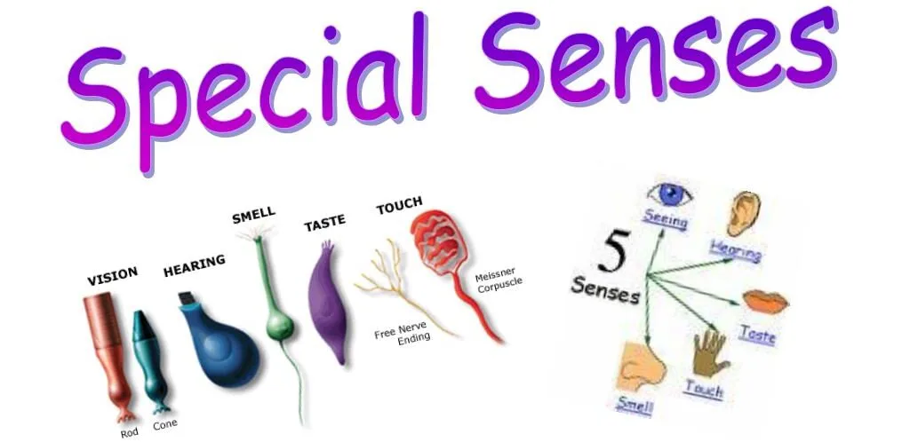
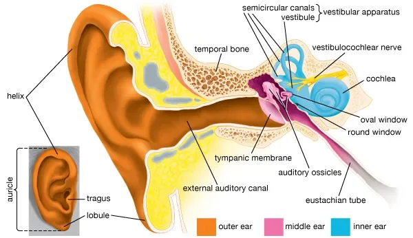
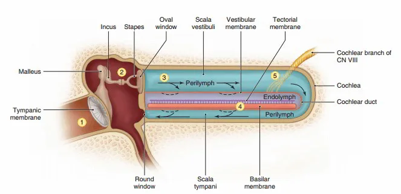
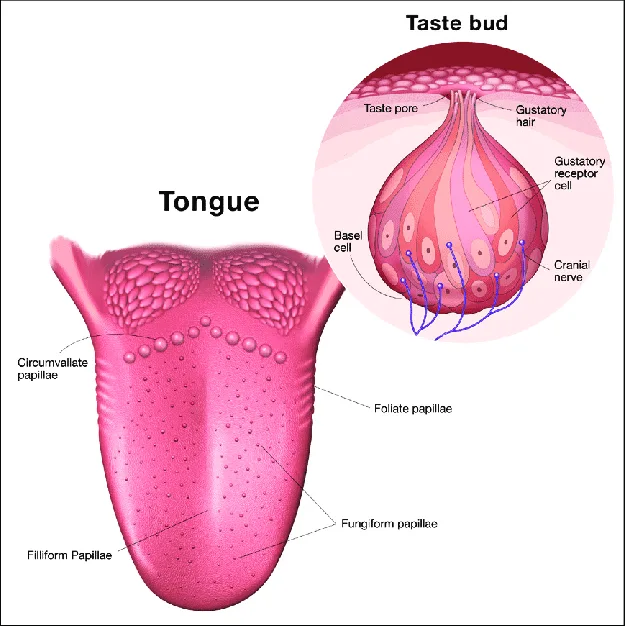
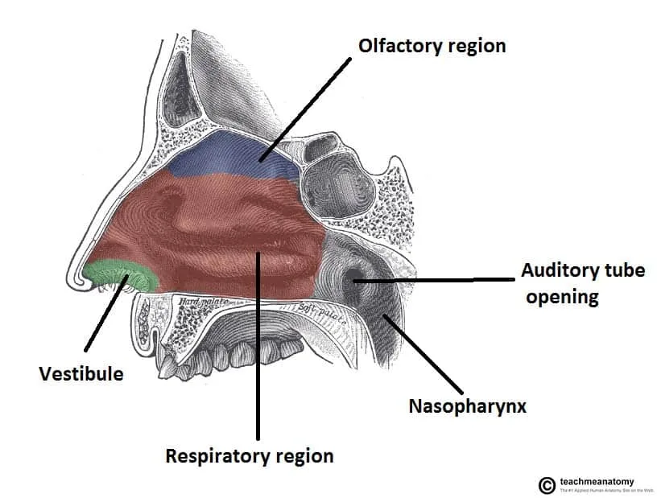
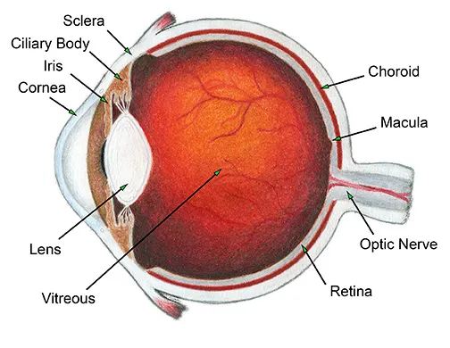
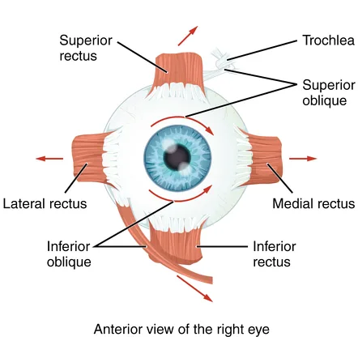
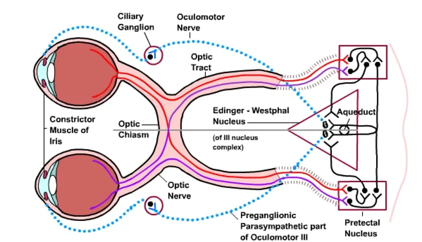

Expanded Nursing Uganda Explanation
Organs of special Senses and the detailed diagrammatic description should be understood beyond a short definition. Link the concept to patient history, focused assessment, common risks, nursing priorities, documentation and evaluation of outcomes.
Contents, 33 sections (tap to expand)
01 Organs of Special Senses
The special senses are how our body perceives specific types of information from the external environment. Each special sense has specialised sensory receptors that detect a particular type of stimulus (like light, sound waves, chemicals) and convert it into nerve impulses that are sent to the brain for interpretation.
Our ability to perceive the world around us is made possible by our sensory systems. These systems can be divided into two main categories:
- General Senses: Have receptors that are widely distributed throughout the body (in the skin, muscles, joints, and organs). They include touch, pressure, pain, temperature, and proprioception (sense of body position).
- Special Senses: Have complex sensory organs and receptors that are localized in the head. They are vision, hearing, equilibrium (balance), taste (gustation), and smell (olfaction).
All senses rely on sensory receptors to detect a specific stimulus (e.g., light, sound, chemicals). This stimulus is then converted into a nerve impulse through a process called transduction . This nerve impulse is transmitted via cranial nerves to specific areas of the brain, where the information is integrated, coordinated, and ultimately interpreted, allowing for perception.
02 The Ear: Hearing and Equilibrium
The ear is a complex organ responsible for two distinct but related special senses: hearing and balance. The receptors for both senses are located deep within the inner ear and are supplied by the vestibulocochlear nerve (Cranial Nerve VIII). All structures of the ear, except the external auricle, are housed within the petrous part of the temporal bone for protection.
The ear is the organ of hearing, and it also plays a vital role in balance.
03 Main Parts:
The ear has three main parts:
- The outer ear – collects sound waves.
- The middle ear – transmits sound vibrations.
- The inner ear – converts sound vibrations into nerve impulses (for hearing) and detects movement and position (for balance).
04 Anatomy of the Ear
The ear is divided into three distinct parts: the outer ear, middle ear, and inner ear.
05 Part 1: The Outer Ear
The outer ear collects sound waves and channels them inward. It consists of:
- Auricle (or Pinna): The visible, shell-shaped part of the ear on the outside of the head. It is composed of elastic cartilage covered with skin. Its function is to funnel sound waves into the ear canal.
- External Acoustic Meatus (Auditory Canal): A slightly S-shaped tube (~2.5 cm long) that extends from the auricle to the eardrum. It is lined with skin containing hair follicles and ceruminous glands. These modified sweat glands secrete cerumen (earwax), a sticky substance that helps trap foreign materials like dust and insects and contains protective substances like lysozyme to prevent microbial growth.
Function: To collect sound waves and channel them down the auditory canal to the eardrum. It also provides basic protection.
06 Part 2: The Middle Ear (Tympanic Cavity)
The middle ear is a small, air-filled cavity within the temporal bone. Its function is to transmit and amplify sound vibrations from the outer ear to the inner ear.
Location: An air-filled space inside the temporal bone, between the outer ear and the inner ear.
Main Parts:
- Tympanic Membrane (Eardrum): A thin, translucent membrane stretched across the end of the auditory canal. It vibrates when sound waves strike it.
- Auditory Ossicles: The three smallest bones in the body, which form a chain across the middle ear. They are, from outer to inner: Malleus (Hammer): Its "handle" is attached to the tympanic membrane.
- Incus (Anvil): The middle bone, which articulates with the malleus and stapes.
- Stapes (Stirrup): Its footplate fits into the oval window, a membrane-covered opening that leads to the inner ear.
- Pharyngotympanic Tube or Auditory (Eustachian) Tube: A tube that connects the middle ear to the nasopharynx. Its function is to equalize the air pressure on both sides of the tympanic membrane, allowing it to vibrate freely. Swallowing or yawning opens this tube, which is why your ears may "pop" during changes in altitude.
Functions:
- Transmit and Amplify Sound: The auditory ossicles transmit the vibrations from the eardrum across the middle ear to the inner ear. They also amplify (increase the strength of) the vibrations, helping to move the fluid in the inner ear.
- Equalize Pressure: The pharyngotympanic tube opens (e.g., when swallowing or yawning) to allow air to enter or leave the middle ear, equalizing the air pressure on both sides of the eardrum. This is important for the eardrum to vibrate properly. If the pressure is unequal (e.g., during rapid changes in altitude like in a plane or on a mountain), your ears might feel "blocked" until the tube opens.
Clinical Correlation: In children, the auditory tube is shorter and more horizontal, which can allow bacteria from a throat infection to travel easily to the middle ear, causing a middle ear infection (otitis media).
07 Part 3: The Inner Ear (Labyrinth)
The inner ear houses the complex mechanoreceptors for hearing and equilibrium. It consists of two main parts:
- Bony Labyrinth: A system of twisting channels and cavities within the temporal bone. It is filled with a fluid called perilymph .
- Membranous Labyrinth: A series of membranous sacs and ducts suspended within the perilymph of the bony labyrinth. It is filled with a different fluid called endolymph .
The bony labyrinth is subdivided into three regions:
- The Cochlea: A snail-shaped, coiled bony chamber responsible for hearing. Internally, it is divided into three fluid-filled channels. The central channel, the cochlear duct, contains the spiral organ (organ of Corti) , which houses the receptors for hearing, the hair cells .
- The Vestibule: The central egg-shaped cavity of the bony labyrinth. It contains two membranous sacs, the saccule and the utricle , which house the receptors for static equilibrium (responding to gravity and linear acceleration).
- The Semicircular Canals: Three bony canals oriented in the three planes of space (anterior, posterior, and lateral). They house the receptors for dynamic equilibrium (responding to rotational or angular movements of the head).
08 The Physiology of Hearing
Hearing is the process of converting sound waves in the air into nerve impulses that the brain can interpret.
The Pathway of Sound:
- Collection: Sound waves are collected by the auricle and funneled into the external auditory canal.
- Vibration of Eardrum: The sound waves cause the tympanic membrane to vibrate at the same frequency.
- Amplification by Ossicles: The vibration is transferred to the malleus, then the incus, and finally the stapes. The lever-like action of the ossicles amplifies the pressure of the vibration by about 20 times.
- Pressure Wave in Inner Ear: The stapes footplate pushes on the oval window, creating pressure waves in the perilymph of the cochlea.
- Stimulation of Hair Cells: The pressure waves travel through the perilymph, causing the basilar membrane within the cochlea to vibrate. This vibration pushes the delicate hair cells of the spiral organ against the overlying tectorial membrane, causing their stereocilia (hairs) to bend.
- Transduction: The bending of the stereocilia opens mechanically-gated ion channels, leading to the generation of a nerve impulse.
- Neural Pathway: The nerve impulse is transmitted along the cochlear branch of the vestibulocochlear nerve (CN VIII) to the auditory cortex in the temporal lobe of the brain, where the sound is perceived.
- Pressure Relief: The pressure waves are dissipated at the round window, a membrane at the end of the cochlea, which prevents the waves from echoing back and causing damage.
09 Physiology of Hearing (How We Hear):
- Sound Waves Collected: The auricle collects sound waves and directs them into the auditory canal.
- Eardrum Vibrates: Sound waves strike the tympanic membrane, causing it to vibrate.
- Vibrations Transmitted: The vibrating eardrum moves the malleus, which moves the incus, which moves the stapes. The stapes footplate vibrates in the oval window of the inner ear.
- Fluid Waves Created: The vibration of the stapes in the oval window creates waves in the fluid (perilymph and endolymph) inside the cochlea.
- Hair Cells Stimulated: These fluid waves cause movement of the basilar membrane and bend the hair cells in the spiral organ. The hair cells are the sensory receptors for hearing.
- Nerve Impulses Generated: When the hair cells bend, they generate nerve impulses.
- Signals to the Brain: These nerve impulses travel along the cochlear nerve (part of the vestibulocochlear nerve, cranial nerve VIII) to the brainstem and then to the auditory area in the temporal lobe of the cerebral cortex.
- Sound Perceived: The brain interprets these nerve impulses as sound. Different pitches of sound stimulate different hair cells in the cochlea, and the loudness depends on the strength of the vibrations.
10 The Physiology of Equilibrium (Balance)
Equilibrium is the sense that allows us to monitor the position and movement of our head in space.
Static Equilibrium (Sensing Gravity and Linear Motion):
- Receptors are located in the maculae of the utricle and saccule.
- These receptors contain hair cells whose stereocilia are embedded in a jelly-like membrane containing tiny calcium carbonate crystals called otoliths ("ear stones").
- When the head tilts, gravity pulls on the otoliths, which in turn bend the hair cells. This generates a nerve impulse that informs the brain about the position of the head relative to gravity. This also detects straight-line acceleration and deceleration.
Dynamic Equilibrium (Sensing Rotation):
- Receptors are located in the crista ampullaris within the enlarged base (ampulla) of each semicircular canal.
- The hair cells in the crista have their stereocilia embedded in a gelatinous cap called the cupula .
- When the head rotates, the endolymph fluid inside the membranous ducts lags behind due to inertia. This fluid movement pushes against the cupula, bending the hair cells and generating a nerve impulse.
- Because the three canals are in different planes, the brain can detect rotational movement in any direction.
Neural Pathway: Impulses from both static and dynamic equilibrium receptors travel along the vestibular branch of the vestibulocochlear nerve (CN VIII) to the brainstem and cerebellum. The cerebellum coordinates this information with input from the eyes and stretch receptors in muscles and joints to maintain balance and body position.
11 Physiology of Balance (How We Balance):
The vestibule and semicircular canals work together to detect movement and position.
- Vestibule (Utricle and Saccule): These sacs contain hair cells embedded in a gel-like material with tiny calcium carbonate crystals (otoliths). When you move your head in a straight line (like accelerating in a car) or change the position of your head relative to gravity (like tilting your head), the otoliths shift, bending the hair cells.
- Semicircular Canals: The loops contain fluid (endolymph) and hair cells in enlarged areas called ampullae. When you rotate your head (like spinning), the fluid in the canals moves, bending the hair cells in the ampullae.
- Nerve Impulses Generated: Bending of the hair cells in the vestibule and semicircular canals generates nerve impulses.
- Signals to the Brain: These impulses travel along the vestibular nerve (part of the vestibulocochlear nerve, cranial nerve VIII) to the brainstem and then mainly to the cerebellum.
- Balance Maintained: The brain (cerebellum) receives information about movement and position from the ears, eyes, and stretch receptors in muscles and joints. It uses this information to adjust muscle activity and maintain balance and posture.
12 The Chemical Senses: Taste and Smell
Taste (gustation) and smell (olfaction) are chemical senses because their receptors are chemoreceptors that respond to chemicals dissolved in an aqueous solution (saliva for taste, mucus for smell). These two senses are closely linked.
13 Sense of Taste (Gustation)
The tongue is the main organ for the sense of taste, also called gustation.
Location: The sensory receptors for taste are called taste buds. Most taste buds are located on tiny bumps on the tongue's surface called papillae. Some are also found in the lining of the mouth and pharynx.
14 Physiology of Taste:
- Chemicals Enter Mouth: Chemicals from food and drink enter the mouth.
- Chemicals Dissolve: These chemicals must dissolve in saliva to be tasted.
- Taste Buds Stimulated: Dissolved chemicals stimulate the taste buds (chemoreceptors).
- Nerve Impulses Generated: Stimulation of the taste buds generates nerves impulses.
- Signals to the Brain: These impulses travel along nerves (facial, glossopharyngeal, and vagus nerves - cranial nerves VII, IX, X) to the brainstem and then to the taste area in the cerebral cortex.
- Taste Perceived: The brain interprets these impulses as different tastes. There are traditionally considered to be four basic tastes: sweet, sour, salty, and bitter, although others like umami (savoury) are also recognized. Taste is strongly influenced by smell.
Taste Buds: The sensory organs for taste are the taste buds, most of which are located on the tongue in peg-like projections of the mucosa called papillae .
Types of Papillae:
- Vallate (Circumvallate) Papillae: Large papillae arranged in a V-shape at the back of the tongue.
- Fungiform Papillae: Mushroom-shaped papillae scattered over the entire tongue surface.
- Filiform Papillae: The smallest and most numerous; they provide friction to help grip food but do not contain taste buds.
Five Basic Taste Sensations: Humans can distinguish five basic tastes: sweet (sugars), sour (acids), salty (metal ions like Na⁺), bitter (alkaloids), and umami (the "savory" taste from amino acids like glutamate). All other "flavors" are a combination of these tastes, plus input from olfactory receptors.
Neural Pathway: Impulses are transmitted by three cranial nerves: the facial nerve (VII) from the anterior two-thirds of the tongue, the glossopharyngeal nerve (IX) from the posterior third, and the vagus nerve (X) from the epiglottis and pharynx. These impulses are relayed through the medulla and thalamus to the gustatory cortex in the parietal lobe.
15 Sense of Smell (Olfaction)
The nose is the organ for the sense of smell, also called olfaction.
Location: The sensory receptors for smell are special nerve endings (chemoreceptors) located in the mucous membrane at the very top of the nasal cavity (near the cribriform plate of the ethmoid bone).
16 Physiology of Smell:
- Odour Molecules Enter: When you inhale air, small molecules that carry smells (odour molecules) enter the nasal cavity.
- Molecules Dissolve: These odour molecules dissolve in the mucus covering the lining at the top of the nasal cavity.
- Chemoreceptors Stimulated: The dissolved odour molecules stimulate the chemoreceptors (olfactory nerve endings).
- Nerve Impulses Generated: Stimulation of the chemoreceptors generates nerve impulses.
- Signals to the Brain: These impulses travel along the olfactory nerves (cranial nerve I) directly to the brain (olfactory bulb and then to the olfactory area in the temporal lobe of the cerebral cortex).
- Smell Perceived: The brain interprets these nerve impulses as different smells. The sense of smell is closely linked to the sense of taste.
Olfactory Epithelium: The sensory organ for smell is the olfactory epithelium, located in the roof of the nasal cavity. It contains millions of olfactory sensory neurons (chemoreceptors).
Neural Pathway: The axons of the olfactory sensory neurons form the filaments of the olfactory nerve (CN I) . They pass through the cribriform plate of the ethmoid bone to synapse in the olfactory bulb. From there, impulses are sent via the olfactory tract to the olfactory cortex in the temporal lobe.
Adaptation: The olfactory system adapts quickly. When continuously exposed to an odor, perception of that odor decreases and can stop within a few minutes.
Anosmia: The loss of the sense of smell, often due to inflammation of the nasal mucosa from a cold, allergies, or head trauma.
17 The Eye and the Sense of Vision
The eye is the organ of sight, containing photoreceptors that respond to light.
18 Part 1: Accessory Structures of the Eye
These structures protect the eye and aid in its function.
- Eyebrows and Eyelids (Palpebrae): Protect the eye from foreign objects, perspiration, and excessive light.
- Eyelashes: Trigger reflex blinking when touched.
- Conjunctiva: A transparent mucous membrane that lines the eyelids and covers the anterior surface of the eyeball (over the white of the eye). It produces lubricating mucus.
- Lacrimal Apparatus: Produces and drains tears. Lacrimal Glands: Located above the outer part of the eye. Produce tears.
- Lacrimal Ducts: Carry tears across the eye surface.
- Lacrimal Sac and Nasolacrimal Duct: Collect tears near the inner corner of the eye and drain them into the nasal cavity.
- Extrinsic Eye Muscles: Six strap-like muscles that control the movement of the eyeball, allowing us to scan our environment. They are innervated by the Oculomotor (III), Trochlear (IV), and Abducens (VI) cranial nerves.
19 Part 2: Structure of the Eyeball
The eyeball itself is a slightly irregular sphere composed of three layers or tunics.
- Outer layer (Fibrous Layer): Tough and protective. Made of two parts: Sclera: The white part of the eye. It's a strong fibrous membrane that maintains the eye's shape and provides attachment for eye muscles.
- Cornea: The clear, front part of the eye, like a transparent window. Light enters the eye through the cornea. The cornea is curved and helps bend (refract) light rays. It has no blood vessels but is rich in nerve endings (very sensitive).
- Middle layer (Vascular Layer or Uvea): Contains many blood vessels and pigment cells. Made of three parts: Choroid: The layer behind the retina. It contains many blood vessels that supply nutrients and oxygen to the retina. Its dark pigment absorbs scattered light inside the eye.
- Ciliary Body: Located at the front of the choroid. Contains the ciliary muscle (a smooth muscle that changes the shape of the lens) and produces the fluid that fills the front of the eye.
- Iris: The colored part of the eye around the pupil. It's a muscular structure that controls the size of the pupil, regulating how much light enters the eye. It has circular muscles (that constrict the pupil) and radiating muscles (that dilate the pupil).
- Inner layer (Nervous Layer): The retina. Retina: The light-sensitive lining at the back of the eye. It contains the photoreceptor cells ( rods and cones ) that detect light. Rods work in dim light (black and white vision), and cones work in bright light (color vision and sharp detail). Nerve fibres from the photoreceptors gather to form the optic nerve.
- Optic Disc (Blind Spot): The area where the optic nerve leaves the eye. It has no photoreceptors, so you cannot see light that falls on this spot.
- Macula Lutea: A small yellowish area in the retina responsible for sharp central vision. The central part of the macula, the fovea centralis , has the highest concentration of cones and provides the sharpest vision.
20 Part 3: Internal Chambers and Fluids
- Lens: A biconvex, transparent, flexible structure that can change shape to precisely focus light on the retina.
- Anterior Segment: The space in front of the lens, filled with a clear fluid called aqueous humor .
- Posterior Segment: The space behind the lens, filled with a gel-like substance called vitreous humor .
21 Physiology of Vision
Vision requires the focusing of light onto the retina and the subsequent conversion of that light energy into nerve impulses.
1. Refraction and Focusing of Light:
- Light rays are bent, or refracted , as they pass through the cornea, aqueous humor, lens, and vitreous humor.
- The lens fine-tunes the focus by changing its shape, a process called accommodation . Distant Vision (>6 meters): The ciliary muscle is relaxed, and the lens is flattened by tension in the suspensory ligaments.
- Near Vision (<6 meters): To focus on a close object, the eye makes three adjustments (the accommodation reflex): Accommodation of the Lens: The ciliary muscle contracts, which slackens the suspensory ligaments, allowing the elastic lens to bulge and become more convex, increasing its refractive power.
- Constriction of the Pupils: The iris constricts the pupil to prevent divergent light rays from entering the eye.
- Convergence of the Eyeballs: The extrinsic muscles rotate the eyeballs medially to keep the object focused on the fovea of both eyes.
2. Phototransduction:
- When light hits the retina, it stimulates the photoreceptors (rods and cones).
- The light energy causes a chemical change in light-sensitive pigments within these cells (e.g., rhodopsin in rods).
- This chemical change triggers a series of reactions that ultimately generate a nerve impulse.
3. Neural Pathway of Vision:
- Impulses from the photoreceptors are passed to bipolar cells and then to ganglion cells.
- The axons of the ganglion cells converge to form the optic nerve (CN II) .
- At the optic chiasma , fibers from the medial aspect of each eye cross over to the opposite side.
- The fibers continue as the optic tracts to the thalamus, and finally to the primary visual cortex in the occipital lobe of the brain, where the visual information is interpreted.
22 Physiology of Sight (How We See):
- Light Enters the Eye: Light rays from objects enter the eye through the cornea.
- Light is Bent (Refracted): The cornea and the lens bend the light rays to focus them onto the retina. The amount of bending by the lens is adjusted (accommodation) to focus on objects at different distances.
- Pupil Size Adjusted: The iris controls the size of the pupil (the opening), regulating how much light enters the eye. In bright light, the pupil constricts (gets smaller); in dim light, it dilates (gets larger). This protects the retina and helps vision in different light levels.
- Light Hits the Retina: The focused light falls on the photoreceptor cells (rods and cones) in the retina.
- Chemicals Change: Light causes chemical changes in the pigments within the rods and cones.
- Nerve Impulses Generated: These chemical changes trigger the photoreceptors to generate nerve impulses.
- Signals to the Brain: The nerve impulses travel along the nerve fibres from the retina, which gather to form the optic nerve (cranial nerve II). The optic nerves from both eyes meet at the optic chiasm, where some fibres cross over. The signals then continue along the optic tracts to the brain.
- Vision Perceived: The nerve impulses reach the visual area in the occipital lobe of the cerebral cortex, where they are interpreted as a visual image. The brain also receives information from both eyes (binocular vision) to perceive depth and distance.
23 The Skin: The Organ of Touch (A General Sense)
While not a "special sense," the skin (integumentary system) is the body's largest sensory organ and is crucial for our interaction with the environment. It contains a wide variety of receptors for the general senses.
Structure: Consists of two main layers: the outer epidermis and the inner dermis. The dermis is rich with sensory nerve endings.
Sensory Receptors in the Dermis:
- Receptors for touch (e.g., Meissner's corpuscles).
- Receptors for pressure (e.g., Pacinian corpuscles).
- Receptors for temperature (thermoreceptors).
- Receptors for pain (nociceptors).
Function: Nerve impulses generated by these receptors are transmitted via spinal and cranial nerves to the brain's somatosensory cortex (in the parietal lobe) for interpretation.
24 Hearing & Balance:
- Hearing: Presbycusis (age-related hearing loss) is common. It usually involves damage to the sensory hair cells in the cochlea. This makes it harder to hear, especially high-pitched sounds and to understand speech in noisy environments. Earwax may also become harder to clear.
- Otitis Media: Middle ear infection.
- Tinnitus: A ringing or clicking sound in the ears in the absence of auditory stimuli.
- Presbycusis: Age-related hearing loss, particularly for high-pitched sounds.
25 Vision:
- Refractive Errors: Myopia (Nearsightedness): Distant objects are blurred because the eyeball is too long or the lens is too strong. Corrected with a concave lens.
- Hyperopia (Farsightedness): Near objects are blurred because the eyeball is too short or the lens is too weak. Corrected with a convex lens.
- Glaucoma: A condition where the drainage of aqueous humor is blocked, causing a dangerous increase in intraocular pressure that can damage the optic nerve.
- Cataract: A clouding of the lens, which leads to blurred vision.
- Presbyopia: Age-related loss of accommodation, making it difficult to focus on near objects.
- Color Blindness: A genetic condition, more common in males, due to a deficiency in one or more types of cone pigments.
- Strabismus: "Crossed eyes," resulting from weakness or improper coordination of the extrinsic eye muscles.
- Sight: The lens becomes less elastic and stiffer, making it harder to focus on near objects ( presbyopia ). Reading glasses are often needed.
- The lens can become cloudy ( cataract ), making vision blurred and less clear, especially in dim light.
- Changes in the retina (like in macular degeneration or diabetic retinopathy if diabetes is present) can affect sharp vision.
- The iris may become less efficient at controlling pupil size, making it harder to adjust to changes in light.
- Glaucoma (increased pressure inside the eye) is more common with age and can damage the optic nerve, leading to vision loss.
26 Smell & Taste:
The number of chemoreceptors declines with age, leading to a diminished sense of both smell and taste.
- The number of sensory receptors for smell and taste may decrease with age. This can lead to a reduced ability to smell and taste, making food seem less flavourful. This can affect appetite and nutrition.
27 Common Deviations from Normal Structure and Function (Disorders)
Problems in the organs of special senses can significantly impact a person's quality of life. Deviations from normal structure and function lead to specific disorders:
28 Ear Disorders (Affecting Hearing and Balance):
- Conductive Hearing Loss: Problems in the outer or middle ear that prevent sound waves from reaching the inner ear effectively. Causes: Blockage of the auditory canal (earwax, foreign body, infection - external otitis), problems with the eardrum (perforation), problems with the ossicles (otosclerosis - abnormal bone growth fixing the stapes), fluid in the middle ear ("glue ear").
- Sensorineural Hearing Loss: Problems in the inner ear (cochlea) or the nerve pathway to the brain. Causes: Damage to the hair cells in the cochlea (ageing - presbycusis, exposure to loud noise, certain medications), viral infections (mumps, measles), Ménière's disease (affects fluid in inner ear, causes vertigo and hearing loss), damage to the vestibulocochlear nerve or auditory area in the brain.
- Infections: External Otitis: Infection of the auditory canal ("swimmer's ear").
- Acute Otitis Media: Infection of the middle ear, often spreading from a throat infection. Causes earache and can sometimes cause the eardrum to rupture.
- Chronic Otitis Media: Long-term middle ear infection, often with a perforated eardrum and discharge. Can lead to hearing loss and spread of infection.
- Labyrinthitis: Inflammation of the inner ear structures (cochlea and vestibule), often caused by infection. Can cause hearing loss and severe dizziness/vertigo.
- Balance Disorders: Problems with the vestibule, semicircular canals, vestibular nerve, or parts of the brain involved in balance. Causes: Labyrinthitis, Ménière's disease, certain head injuries, nerve problems, stroke, some medications.
- Symptoms: Vertigo (feeling of spinning), dizziness, nausea, loss of balance.
- Barotrauma: Damage to the eardrum or middle ear caused by pressure differences between the middle ear and the outside (e.g., during air travel or diving) if the pharyngotympanic tube doesn't equalize pressure properly.
- Tumours: Growths in the ear or related structures, can affect hearing, balance, or nerve function.
29 Eye Disorders (Affecting Sight):
- Refractive Errors: Problems with how the eye bends (refracts) light, so that light is not focused sharply on the retina. Myopia (Nearsightedness): Light is focused in front of the retina, making distant objects blurry. Corrected with concave lenses (glasses/contacts).
- Hyperopia (Farsightedness): Light is focused behind the retina, making near objects blurry. Corrected with convex lenses.
- Astigmatism: Uneven curvature of the cornea or lens, causing blurred vision at all distances. Corrected with cylindrical lenses.
- Presbyopia: Age-related loss of the lens's ability to change shape for focusing on near objects. Corrected with reading glasses.
- Cataract: Clouding of the lens, which blocks light from reaching the retina. Causes blurred vision, especially in dim light. Often age-related.
- Glaucoma: Increased pressure inside the eyeball, usually due to problems with the drainage of aqueous fluid. High pressure can damage the optic nerve, leading to progressive loss of vision (often peripheral vision first).
- Retinopathies: Damage to the retina, often affecting the blood vessels. Diabetic Retinopathy: Caused by diabetes, damaging retinal blood vessels and leading to vision loss.
- Hypertensive Retinopathy: Caused by high blood pressure, damaging retinal blood vessels.
- Retinopathy of Prematurity (ROP): Abnormal blood vessel development in the retina of premature babies, can lead to vision loss.
- Vascular Occlusions: Blockage of retinal arteries or veins, causing sudden vision loss.
- Retinal Detachment: The retina separates from the underlying choroid. This can cause sudden loss of vision (like a curtain coming down).
- Inflammatory Conditions: Conjunctivitis: Inflammation of the conjunctiva (lining of eyelids and eyeball), often called "pink eye". Can be caused by infection, allergies, or irritants.
- Keratitis/Corneal Ulcer: Inflammation or open sore on the cornea, often due to infection or injury. Can be very painful and affect vision.
- Blepharitis: Inflammation of the eyelid margins.
- Infections: Viral (herpes simplex), bacterial, fungal, or parasitic.
- Strabismus (Squint or Cross-eye): Occurs when the eyes are not aligned and look in different directions. Caused by weakness or nerve problems affecting the eye muscles. Can lead to double vision or the brain ignoring input from one eye.
- Tumours: Growths in the eye or related structures, can affect vision. Retinoblastoma is a rare malignant tumour in children. Malignant melanoma can occur in the choroid in adults.
Understanding these special senses and their potential deviations from normal is essential for recognizing and addressing problems related to a person's ability to interact with and understand their environment.
- What are the five traditional special senses?
- Name the three main parts of the ear.
- Describe the journey of a sound wave from the auricle to the inner ear, mentioning the structures involved.
- What is the function of the auditory ossicles?
- How does the pharyngotympanic tube help maintain hearing?
- Which part of the inner ear is responsible for hearing? Which parts are responsible for balance?
- How do the vestibule and semicircular canals work with the brain (cerebellum) to maintain balance?
- Name the three layers of the eyeball wall.
- What are the functions of the cornea and the lens?
- Explain the process of accommodation.
- How does the iris control the amount of light entering the eye?
- Describe the role of rods and cones in vision.
- What are the functions of the lacrimal apparatus?
- Explain the difference between myopia and hyperopia. How are they corrected?
- What is a cataract?
- What is glaucoma and how does it affect vision?
- Briefly describe how the sense of smell works, mentioning the chemoreceptors and olfactory nerves.
- Briefly describe how the sense of taste works, mentioning the taste buds and saliva.
- List two specific ways hearing can change with age.
- List two specific ways sight can change with age.
- Mention one common infection of the ear and one common infection of the eye.
- Cohen, JB and Hull, L.K (2016) Memmlers – The Human body in Health and diseases 13th Edition, Wolters, Kluwer.
- Scott, N.W. (2011) Anatomy and Physiology made incredibly easy. 1st Edition. Wolters Kluwers, Lippincotts Williams and Wilkins.
- Moore, L. K, Agur, M.R.A and Dailey, F.A. (2015) Essential Clinical Anatomy.15th Edition. Wolters Kluwer.
- Cohen, J.B and Hull, L.K (2016) Memmler's Structure and Function of the Human Body. 11th Edition. Wolters Kluwer, China
- Snell, S. R. (2012) Clinical Anatomy by Regions. 9th Edition. Wolters Kluwer, Lippincott Williams and Wilkins, China
- Wingerd, B, (2014) The Human Body-Concepts of Anatomy and Physiology. 3rd Edition Lippincott Williams and Wilkins and Wolters Kluwer.
- Rohen, Y.H-Orecoll. (2015) Anatomy.A Photographic Atlas 8th Edition. Lippincott Williams & Wilkins.
- Waugh, A., & Grant, A. (2014). Ross and Wilson Anatomy & Physiology in Health and Illness (12th ed.). Churchill Livingstone Elsevier.
Notes prepared by: Nurses Revision
30 Nursing Uganda Clinical Lens
Use Organs of Special Senses as a practical nursing topic, not only a memorized definition. Start with normal structure and function, then connect it to assessment findings and disease.
- What to understand first: define organs of special senses, identify the normal or expected pattern, then explain what changes when the patient is unwell.
- Why it matters in care: the nurse must recognize risk early, explain findings clearly, document accurately and know when to escalate.
- How to revise it: connect each point to assessment, nursing diagnosis or care problem, intervention, rationale and evaluation.
31 Assessment Guide
- Relevant inspection, palpation, movement, auscultation, vital signs or neurological checks.
- Normal findings, abnormal findings and what each abnormality may indicate.
- Patient history, risk factors and how the body system affects other systems.
32 Nursing Priorities, Rationales and Outcomes
- Use anatomy to explain symptoms and guide focused assessment.
- Recognize findings that need urgent escalation.
- Teach the patient using simple body-system language.
The rationale for these priorities is patient safety: nursing actions should prevent deterioration, reduce discomfort, support recovery and create clear evidence for the next caregiver.
- Expected outcome: The learner can explain normal function, identify abnormal signs and connect them to nursing action.
33 Patient Teaching and Revision Check
- Explain organs of special senses in simple language the patient or caregiver can repeat back.
- Teach warning signs, medicine or follow-up instructions, hygiene or lifestyle points where relevant.
- For exams, prepare a short answer using: definition, causes or risk factors, signs, assessment, management, complications and prevention.
- For ward practice, document baseline findings, actions taken, patient response and the plan for review.
Illustrations and Diagrams (13)








5 more diagrams available, open the lesson for full illustrations.
Related Video Lectures
Watch nursing lecture videos on YouTube for this topic. Opens in a new tab.
Watch on YouTubeExternal link: YouTube may use its own cookies and terms. Nursing Uganda is not affiliated with YouTube.